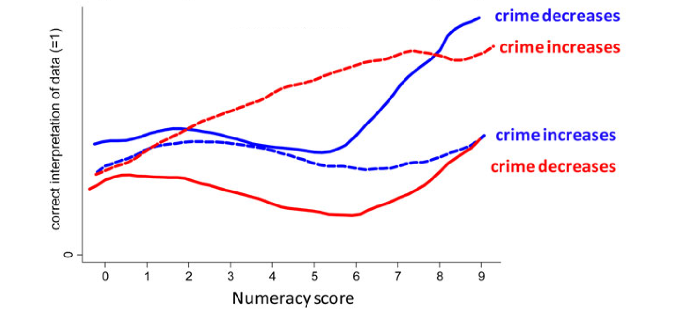
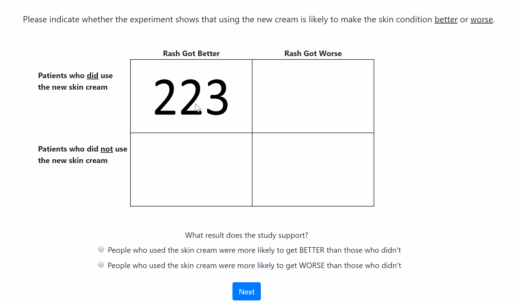
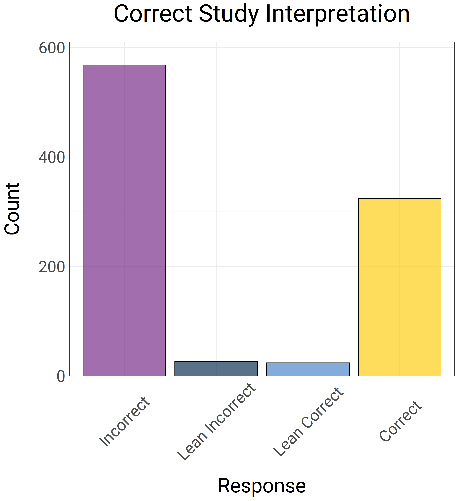
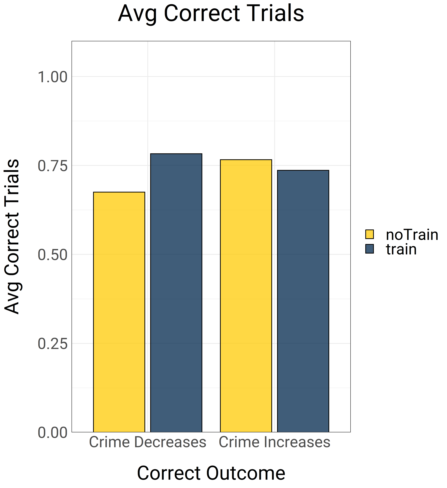

Motivated Numeracy and
Political Beliefs
Clint McKenna
January 27th, 2021
Numeracy refers to one's expertise with numerical information (retrieve and use appropriate numerical principles)1
Motivated reasoning refers to the biased access, construction, and evaluation of beliefs in order to arrive at a prefered conclusion2
Peters et al. (2006)1
Kunda (1990)2
Expressive Rationality
The rational way to use one’s intellect is to process information in a way that promotes consistent belief formation 1
“...the antagonism between identity-protective cognition and perceptual accuracy is not a consequence of too little rationality but too much” 2
Kahan et al. (2017)1
Kahan (2017)2
Kahan et al. (2017)

Replications
- Kahan and Peters (2017)
- Nurse and Grant (2020)
- Van Boven et al., Study 2 (2019)
Non-Replications
- Baker et al. (2020)
- Connor et al. (2020)
- Merola and Hitt (2016)
- Van Boven et al., Study 1 (2019)
Predictions
-
H1: Motivated Numeracy/Expressive Rationality
Ss will selectively use their expertise in a politically motivated way -
H2: Pure Expressive Responding
Ss will arrive at the congenial response without any cognitive effort -
H3: Gettier Belief
Ss will arrive at correct answer for the wrong reasons -
H4: Acquiescence
Ss will go along with forced binary choice to support their politics
Study 1
Study 1 Participants
1000 self-identified Democrats and Republicans on MTurk
Exclusions
- 20 failed data quality check
- 22 reported or logged technical errors
- 26 logged no information-seeking data
- 22 nonresponse to items
Final N = 910 (55% female)
Procedure
Same procedure as Kahan et al.,1 but adapted information board task2,3
- Obscured cells unless participants hovered over area with mouse cursor
- Cell transitions quantify information-seeking behavior

Kahan et al. (2017)1
Redlawsk (2002)2
Taber & Lodge (2006)3
Gun Control Beliefs
Average of 8 Items (5-point scale) adapted from Pew American Trends Panel1, loaded on single factor (α = .92)
Example Items
- “I think gun violence is a big problem in the United States"
- "Overall, I think gun laws should be a lot more strict than they are today”
Scale was recoded such that higher values = more congenial (preference-consistent) attitudes towards the conclusion for the a given condition
Pew Research Center (2017)1
Numeracy
Measured test of statistical competence using 4-item Berlin Numeracy Test1
Out of 1,000 people in a small town 500 are members of a choir. Out of these 500 members in the choir 100 are men. Out of the 500 inhabitants that are not in the choir 300 are men. What is the probability that a randomly drawn man is a member of the choir?
- 10%
- 25%
- 40%
- None of the above
Cokely et al. (2012)1
Outcome Variables
- Was the study interpretation correct?
- "Cities with the ban were more likely to have a DECREASE in crime than cities without bans"
- "Cities with the ban were more likely to have an INCREASE in crime than cities without bans"
Coded 1 if correct interpretation, 0 if incorrect
Outcome Variables
- Was the study interpretation correct?
- Was the strategy for solving the problem correct?
Examples:- "How the 223 compared to all the other numbers"
- "How the ratio 223/107 compared to the ratio 75/21"
Coded 1 if ratio option was selected, 0 otherwise
Outcome Variables
- Was the study interpretation correct?
- Was the strategy for solving the problem correct?
- How many mouse transitions between cells were there?
Negative binomial regression used for mouse transitions (count)
Results - Correct Interpretation
No main effects of condition
- 34.4% of rash (vs. 36.5% of gun control) Ss answered correctly, OR = 1.06, p = .702
Main effect of numeracy on correct response
- OR = 1.45, p < .001
Results - Strategy
Only 19% of Ss had both correct interpretation AND correct strategy.
- 53% of all correct responses
Main effect of gun/rash condition
- Gun control Ss were less likely to report correct strategy, OR = .62, p = .002
Main effect of numeracy
- OR = 1.79, p < .001
Results - Mouse Transitions
Average of 24.5 mouse transitions per participant
Main effect of gun/rash condition
- Rash Ss were more likely to report correct strategy, OR = .62, p = .002
Main effect of numeracy
- OR = 1.79, p < .001
Study 1 Conclusion
H1: Motivated Numeracy prediction not supported
- Effect of political beliefs on accuracy, but did not vary with numeracy
H2: (Overt) Expressive Resonding not supported
- Few appeared to give answer without effort, or only based on prior beliefs
H3: Gettier Belief supported
- About half correct answers were made with the wrong rationale
Study 2
Study 2 Participants
1000 self-identified Democrats and Republicans on MTurk
Exclusions
- 10 failed data quality check
- 22 reported or logged technical errors
- 1 logged no information-seeking data
- 24 nonresponse to items
Final N = 943 (54.1% female)
Study 2 Procedure
Same as Study 1, with one exception.
Study Interpretation Options
- "Cities with the ban were more likely to have a DECREASE in crime than cities without bans"
- "Cities with the ban were more likely to have an INCREASE in crime than cities without bans"
- I don't know
- ➔ "If you were forced to choose, which response would you lean towards?"
Results - Leaners
40 Ss in Gun Control conditions initially selected "I don't know"
- Compared to 11 Ss in Rash condition
- 41% of Gun Control Ss went with a congenial response when pressed

Results - Correct Interpretation
Including "Leaners"
No main effects of condition
- 37.9% of rash (vs. 35.8% of gun control) Ss answered correctly, OR = .9, p = .46
Main effect of numeracy on correct response
- OR = 1.46, p < .001
Results - Strategy
Only 18.3% of Ss had both correct interpretation AND correct strategy.
- 57.8% of all correct responses
Main effect of gun/rash condition
- Gun control Ss were less likely to report correct strategy, OR = .59, p < .001
Main effect of numeracy
- OR = 1.55, p < .001
Results - Mouse Transitions
Average of 27.6 mouse transitions per participant
Main effect of gun/rash condition
- Rash Ss were more likely to report correct strategy, b = .13, p = .003
Main effect of numeracy
- b = .06, p = .004
Study 2 Conclusion
H4: Acquiescence prediction not supported
- Ss were willing to commit to an initial response, even when given an out
Study 3
Study 3 Participants
1000 self-identified Democrats and Republicans on Prolific Academic
Exclusions
- 29 failed data quality check
- 1 logged technical errors
- 21 nonresponse to items
Final N = 949 (47.6% female)
Study 3 Procedure
- Training Condition (between-subjects)
- 2 practice problems about skin rash
- Training Ss were walked through every step of comparing the ratios of table cells
- Outcome (within-subjects)
- 5 trials intervention effective, 5 trials ineffective
- Cell A implication of correct answer and liberal answer counterbalanced
Results - Training Condition
Condition x Outcome Interaction
- Training Ss were more accurate, but especially when compared to non-trained Ss in the Crime Decreases Condition
- b = -.13, p < .001

Results - Strategy
Training Condition interacted with prior attitudes
Main effect of numeracy
- OR = 1.55, p < .001
Results - Mouse Transitions
Average of 15.6 mouse transitions per participant
Study 3 Conclusion
H1: Motivated Numeracy prediction not supported
H2: Expressive responding prediction not supported
Discussion
H1: Motivated Numeracy prediction not supported
- In studies 1, 2, and 3, we did not find evidence of increased motivated responding at higher levels of numeracy or among numerically trained Ss
Discussion
H1: Motivated Numeracy prediction not supported
H2: Expressive Responding prediction not supported
- In studies 1 and 2, Ss were motivated in responses, but not clear evidence they responded without cognitive effort
- In study 3, accuracy rates were high, even for uncongenial trials
Discussion
H1: Motivated Numeracy prediction not supported
H2: Expressive Responding prediction not supported
H3: Gettier Belief prediction partially supported
- In studies 1, 2 and 3, Ss often arrived at the correct interpretation but did not report the correct strategy
- In studies 1 and 2, being right for the wrong reason was associated with congeniality towards the problem that was being solved
- This might be explained by reasons other than Gettier cases or overt expressive responding
Discussion
H1: Motivated Numeracy prediction not supported
H2: Expressive Responding prediction not supported
H3: Gettier Belief prediction partially supported
H4: Acquiescence prediction not supported
- In study 2, very few Ss were uncertain about a response
Next Steps
More sophisticated ways of looking at decision cues in Study 3
Thanks!
Advisor
David Dunning
SaSI lab
HAIL lab
Koji, Julia
Cohort
Susannah, Martha, Imani, Nadia, Sakura